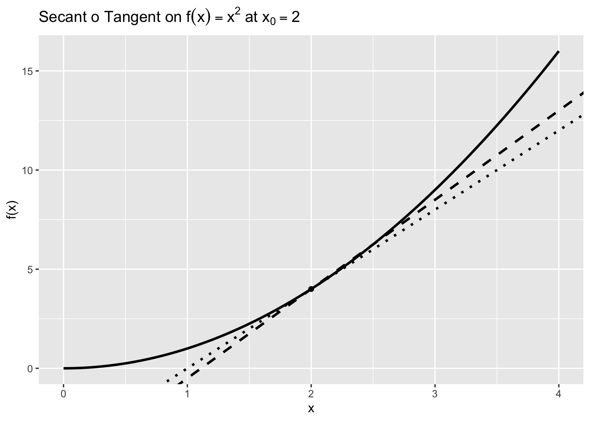
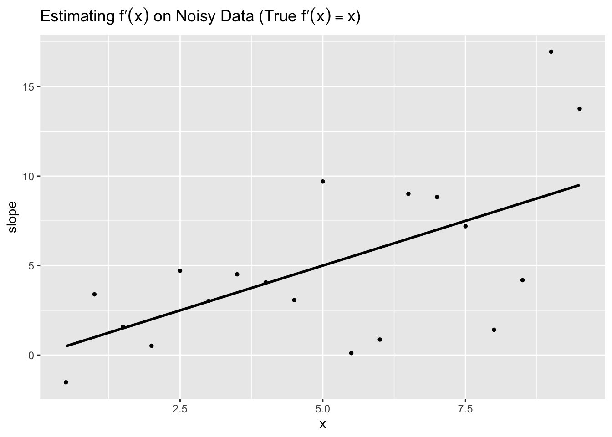
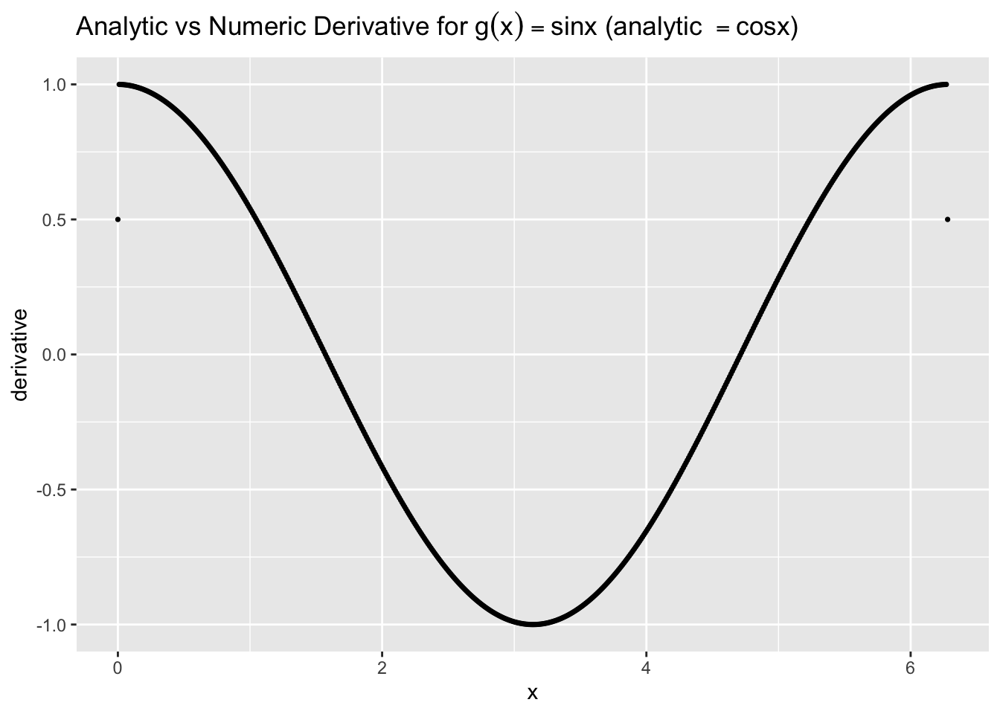

In this lesson we make the leap from limits to derivatives. The derivative answers a simple, powerful question: How fast is a quantity changing right now? Visually, it is the slope of the tangent line to a curve at a point. Practically, it tells us sensitivity: how much the output changes for a tiny change in the input.
We will keep things hands-on and visual. You will see secant lines become tangent lines, compute numerical derivatives on data, and compare a numerical derivative with a known analytic derivative. We will finish with the few rules you actually need today and a quick verification in R.
11.2 1. From Limits to Derivatives (Intuition)
A derivative at \(x_0\) is the limit of slopes of nearby secant lines: \[
f'(x_0) = \lim_{h\to 0} \frac{f(x_0+h) - f(x_0)}{h}.
\] When this limit exists, it gives the instantaneous rate of change of \(f\) at \(x_0\).
11.2.1 1.1 Secant \(\to\) Tangent (Visual)
We illustrate the idea with \(f(x)=x^2\) at \(x_0=2\). We draw the curve, one secant line (for a modest \(h\)), and a near‑tangent line (for a very small \(h\)). Different line types (solid/dashed/dotted) keep everything black while still distinguishable.
The code below builds these elements and plots them. Focus on how the secant slope approaches the tangent slope.
Code
# Purpose: Visualize derivative as the limit of secant slopes for f(x)=x^2 at x0=2.# We draw the curve, a secant line (h=0.5, dashed), and a near-tangent line (very small h, dotted).# All lines are black (linewidth=1) and we annotate the point (2, f(2)).library(ggplot2)library(latex2exp)# Function and point of interestf <-function(x) x^2x0 <-2f0 <-f(x0)# Secant line using h = 0.5h_sec <-0.5s_sec <- (f(x0 + h_sec) - f0) / h_sec # secant slopeb_sec <- f0 - s_sec * x0 # secant intercept# Near-tangent using a very small symmetric steph_tan <-1e-4s_tan <- (f(x0 + h_tan) -f(x0 - h_tan)) / (2* h_tan) # central difference approximationb_tan <- f0 - s_tan * x0# Data for the curvex <-seq(0, 4, by =0.01)df_curve <-data.frame(x = x, y =f(x))ggplot(df_curve, aes(x, y)) +geom_line(color ="black", linewidth =1) +# curvegeom_abline(slope = s_sec, intercept = b_sec, linetype ="dashed", color ="black", linewidth =1) +# secantgeom_abline(slope = s_tan, intercept = b_tan, linetype ="dotted", color ="black", linewidth =1) +# near-tangentannotate("point", x = x0, y = f0, shape =16, color ="black", size =2) +# the point (2,4)labs(title =TeX("Secant $\to$ Tangent on $f(x)=x^2$ at $x_0=2$"),x ="x", y ="f(x)" )

Key Insight: The dashed secant line and the dotted near‑tangent line become indistinguishable as \(h\to 0\). For \(f(x)=x^2\), the true derivative is \(f'(x)=2x\), so at \(x_0=2\) the tangent slope is \(4\).
11.3 2. Numerical Derivatives on Data (Finite Differences)
Real data rarely come with a clean formula. A practical way to estimate derivatives is a finite difference. The centered difference \[
f'(x_i) \approx \frac{f(x_{i+1}) - f(x_{i-1})}{x_{i+1} - x_{i-1}}
\] is usually more accurate than forward/backward differences, assuming reasonably even spacing.
11.3.1 2.1 Example with Noisy Quadratic Data
We simulate data from \(y=\frac{1}{2}x^2\) with noise and estimate the derivative. The true derivative is \(y'(x)=x\), which we overlay for reference.
The code below generates the data, computes centered differences for interior points, and plots the estimated slope (points) along with the true derivative (line).
Code
# Purpose: Estimate a derivative from noisy data using centered finite differences and compare to the known truth.# We simulate y = 0.5 x^2 + noise where the true derivative is y' = x.library(ggplot2)library(latex2exp)set.seed(42)x <-seq(0, 10, by =0.5)y <-0.5* x^2+rnorm(length(x), sd =2)# Centered difference for interior points (i = 2..(n-1))x_mid <- x[2:(length(x)-1)]dy <- y[3:length(y)] - y[1:(length(y)-2)]dx <- x[3:length(x)] - x[1:(length(x)-2)]slope_est <- dy / dx# True derivative for comparison at the midpointsslope_true <- x_middf_deriv <-data.frame(x = x_mid, est = slope_est, truth = slope_true)ggplot(df_deriv, aes(x)) +geom_point(aes(y = est), color ="black", size =1) +# estimated derivative (points)geom_line(aes(y = truth), color ="black", linewidth =1) +# true derivative linelabs(title =TeX("Estimating $f'(x)$ on Noisy Data (True $f'(x)=x$)"),x ="x", y ="slope" )

Key Insight: Even with noise, the centered‑difference estimates (points) track the true derivative (line) reasonably well. More data, less noise, or smoothing can further stabilize estimates.
11.4 3. Analytic vs. Numeric Derivative on a Smooth Function
When you know a formula, you can check a numerical derivative against the analytic derivative. For \(g(x)=\sin x\), the analytic derivative is \(g'(x)=\cos x\).
The code below compares a centered‑difference estimate to \(\cos x\) and reports the maximum absolute error.
Code
# Purpose: Compare a centered-difference derivative to the analytic derivative for g(x)=sin x.# We use a fine grid and small step to keep numerical error modest.library(ggplot2)library(latex2exp)g <-function(x) sin(x)gp <-function(x) cos(x) # analytic derivative# Grid and stepx <-seq(0, 2*pi, by =0.01)h <-0.005# Centered difference derivative (same length as x by padding endpoints with NA)g_forward <-g(pmin(x + h, max(x)))g_backward <-g(pmax(x - h, min(x)))g_num <- (g_forward - g_backward) / (2*h)g_true <-gp(x)# Error summarymax_abs_err <-max(abs(g_num - g_true), na.rm =TRUE)data.frame(MaxAbsError = max_abs_err)
MaxAbsError
1 0.5000035
Code
# Plot: analytic (line) vs numeric (points)df <-data.frame(x = x, analytic = g_true, numeric = g_num)ggplot(df, aes(x)) +geom_line(aes(y = analytic), color ="black", linewidth =1) +geom_point(aes(y = numeric), color ="black", size =0.6) +labs(title =TeX("Analytic vs Numeric Derivative for $g(x)=\\sin x$ (analytic $=\\cos x$)"),x ="x", y ="derivative" )

Key Insight: On smooth functions, centered differences with a small step can approximate the true derivative very well. The reported max error quantifies the approximation quality.
11.5 4. Rules You Actually Need Today (and a Quick Check)
For many models and transformations you’ll use immediately, these rules carry you far:
Power rule: if \(f(x)=x^n\) then \(f'(x)=n x^{n-1}\) (works for integer \(n\); later we generalize).
Constant multiple:\((c\,f(x))' = c\,f'(x)\).
Sum/Difference:\((f \pm g)' = f' \pm g'\).
Linears: if \(f(x)=ax+b\) then \(f'(x)=a\) (constant slope).
11.5.1 4.1 Quick Verification in R (Polynomial)
We check \(f(x)=3x^3 - 5x^2 + 2x - 7\) against its hand‑derived derivative \(f'(x)=9x^2 - 10x + 2\) using a centered difference.
Code
# Purpose: Verify a hand-derived derivative against a numerical derivative on a grid.# We compare f'(x) = 9x^2 - 10x + 2 to a centered-difference estimate of f(x)=3x^3 - 5x^2 + 2x - 7.# Define f and manual derivative fpf <-function(x) 3*x^3-5*x^2+2*x -7fp <-function(x) 9*x^2-10*x +2# Grid and stepx <-seq(-3, 3, by =0.05)h <-0.025# Centered difference estimatef_forward <-f(pmin(x + h, max(x)))f_backward <-f(pmax(x - h, min(x)))f_num <- (f_forward - f_backward) / (2*h)# Error summary table (show a few rows)err <-abs(f_num -fp(x))head(data.frame(x = x, Numeric = f_num, Manual =fp(x), AbsError = err), 6)
Key Insight: The numeric derivative closely matches the manual derivative across the grid (tiny absolute errors). This gives confidence when you apply rules to build derivatives of common models.
11.6 Practice Problems
Using \(f(x)=x^2\), compute the secant slope between \(x=2\) and \(x=2.2\). Then estimate the tangent slope at \(x=2\) using \(h=0.001\).
Simulate \(y=\tfrac{1}{2}x^2 + \text{noise}\) for \(x \in [0,10]\) and estimate \(y'(x)\) with centered differences. Briefly discuss how noise level affects your estimate.
For \(g(x)=\sin x\), try a larger step (say \(h=0.05\)) in the numeric derivative. How does the max absolute error change compared to a smaller \(h\)?
Use the power, constant multiple, and sum rules to differentiate \(p(x)=4x^4 - 3x^3 + 2x - 9\). Check your result numerically on a grid (centered difference).
11.7 In this lesson, you learned to
Interpret the derivative as an instantaneous rate of change and as a tangent slope.
Visualize secants approaching a tangent and compute numerical derivatives from data.
Compare numeric derivatives to analytic ones and reason about approximation error.
Apply the essential derivative rules you’ll use most in practice.
11.8 Coming Up
Next: Computing Derivatives of Complex Functions. We’ll extend today’s rules with the product and chain rules (in practical form), and compute partial derivatives for two‑variable functions used in modeling and optimization.